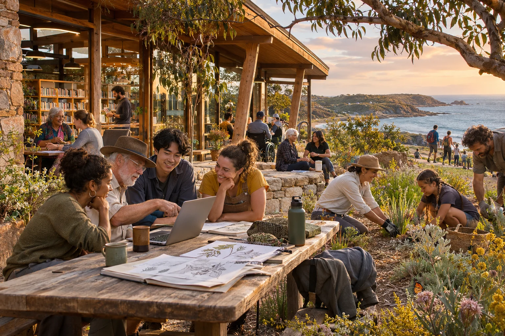

Start with a person
How a personal Aura, practical learning and continuity of care can help people carry their experience through life.
People · intelligence · a shared future
The AI race is also a race over ownership, public choices and the time people have to take part.
Luke Nathan Hayes’s plan connects everyday agency with a much larger ambition. Health, learning, locally owned computing and public evidence can give more people the means to shape what comes next.

A wake-up call with somewhere to go
When an electricity bill is hard to understand, a repair gets lost between departments or a digital service changes its rules, the gap between having a stake and having a say becomes familiar.
The same questions grow larger as AI reaches into research, factories, public services and connected machines. Who can inspect the system? Who can correct it? Who benefits when it becomes more productive? Who can switch it off?
This site brings together two papers. One introduces a whole system for joyful, responsible abundance. The other examines the superintelligence race and Australia’s sovereignty. Read them together to connect the forces changing the world with practical ways people could respond.
Follow the connections
How a personal Aura, practical learning and continuity of care can help people carry their experience through life.
Healthy living, time, useful work and locally owned computing give more people the means to act.
Follow a household bill, a legal question or a local problem through evidence, responsibility and a public response.
Connect personal growth, AI alignment, peaceful cooperation and the proposed global festival in July 2035.
The sovereignty question
Access is useful. Authority also matters. The sovereignty paper follows the connections between money, chips, electricity, manufacturing, software and decisions — and asks which capabilities Australia can build, own and govern.
Understand the raceExplore the scale yourself
What changes when you alter the number of installations or the cost per site? Try the calculator and see exactly which assumptions drive the result.
Open the compute calculator →A place to begin
A coastal community has its own seasons, meeting places, transport constraints and ways of sharing knowledge. The plan begins with that texture of ordinary life, then asks how communities can exchange what they learn while keeping authority over their own choices.
The photographs on this site show real places. The concept images imagine possible settings for the proposals.
Meet the work and its sources →